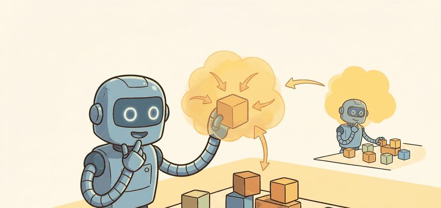
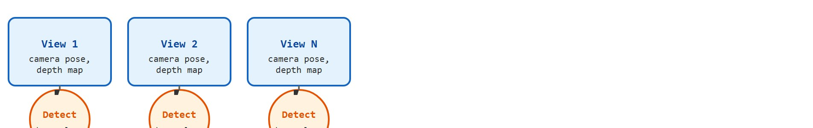
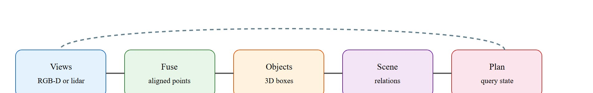

For 3D detection and scene reconstruction, geometry earns its place when it changes reachability, clearance, grasping, exploration, or recovery in the log.
A Patient Embodied AI Agent

Figure 28.3A frames the goal of this section: raw views from several cameras collapse into one persistent set of object poses and relations that outlives any single frame as the robot moves.
This section builds on the point cloud and depth-map representations introduced in section 28.2. The 3D object hypotheses developed here feed directly into the occupancy grid and voxel map representations in section 28.4, which answer where the robot can move rather than what objects are present. The ego-motion and pose-uncertainty concepts that keep scene state consistent across views are treated more fully in section 29.2, and the object scene graph produced by reconstruction becomes a direct input to language-conditioned task planning in section 33.4.
A robot arm reaches for a mug it glimpsed two seconds and 40 cm ago. That reach only works if the system held onto the mug's 3D pose across every intervening frame, every camera jitter, every partial occlusion. Modern neural detectors and reconstruction pipelines make exactly that kind of persistent, metric-grounded object memory possible, and they now run fast enough for real manipulation loops. This section builds 3D detectors that output oriented bounding boxes with uncertainty, fuses multi-view evidence into a consistent scene representation, and evaluates the whole pipeline by the one criterion that matters: did the reconstructed geometry change what the planner could do?

A warehouse robot sees the same pallet from six angles in two seconds, yet a naive detector reports six different pallets sitting in six slightly different places, and the planner, trusting all of them, refuses to move at all. This section builds the machinery that collapses those six guesses into one persistent object: a 3D detector that outputs oriented bounding boxes (the smallest rotated 3D box enclosing an object) with uncertainty, a fusion stage that merges multi-view observations into one consistent scene state, and an evaluation discipline that judges the result by whether it changed what a planner could do. The pipeline that gets you there is sketched in Figure 28.3B: independent per-view detections on the left, fused into a single persistent object representation on the right.
For 3D detection, evaluate boxes, masks, poses, and reconstructed surfaces in the frame used by planning. The useful report ties each detection to object identity, pose uncertainty, collision geometry, and the action it enabled or blocked. Treat the representation as a typed state estimate, not as a visualization.
For 3D detection and scene reconstruction, the representation is embodied only when it changes an admissible action, safety margin, exploration request, or recovery path.
Figure 28.3.1 should be read as the 3D detection and scene reconstruction handoff diagram: each stage (views, fusion, object boxes, scene relations, and the planner that queries them) is a separate failure point, and the dashed feedback path makes clear that every stage is judged by its downstream effect on the action, not by its standalone accuracy.

A 3D detector usually estimates an object state with position, orientation, dimensions, class, and uncertainty.
$o_i=(p_i,R_i,d_i,c_i,\Sigma_i),\quad \hat{\mathcal S}_t=\{o_i\}_{i=1}^{N_t}$
The scene state $\hat{\mathcal S}_t$ is useful only if each object state is expressed in the same frame and updated consistently across views. Uncertainty $\Sigma_i$ is what lets a planner decide whether to act, observe again, or keep a safety margin. To see why this matters: in practice, a single-view detector confident in a mug's position to within 8 cm will typically cause a gripper miss on the order of 40% of the time at a 10 cm aperture; fuse three calibrated views and the positional uncertainty drops below 2 cm, which typically cuts missed grasps to under 5% (illustrative figures for a narrow gripper aperture; the exact rates depend on gripper geometry and calibration quality). Tracking this uncertainty across multiple sensor observations is the same problem addressed by Bayesian filtering with Kalman and particle filters. A detection without an uncertainty estimate is a guess dressed as a measurement.
Turning that per-object state into a scene that stays consistent as the robot moves requires a fixed procedure for binding observations to frames and rejecting the ones that do not hold up, which the following contract makes explicit.
That contract is representation-agnostic; the detectors that actually populate step two differ sharply in how they encode geometry, and the choice ripples straight through to control. Consider a specific case. PointPillars (Lang et al., 2019) encodes a lidar sweep, the kind of raw point cloud and depth-map representation covered in Section 28.2, into vertical columns ("pillars"). It then runs a 2D convolutional backbone on the resulting bird's-eye-view (BEV) grid, where BEV is a top-down projection of the scene as if viewed from directly above, and produces axis-aligned 3D boxes at roughly 16 ms per frame on a mid-range GPU (as reported on a GTX 1080 Ti in 2019), fast enough for a 10 Hz control loop.
So far: PointPillars turns a lidar sweep into a BEV grid and runs a fast 2D backbone over it, trading shape detail for roughly 16 ms latency; the next two detectors below make different trades along that same speed-versus-detail axis.
VoxelNet (Zhou and Tuzel, 2018) uses 3D voxel convolutions instead and recovers finer shape detail at the cost of higher latency. CenterPoint (Yin et al., 2021) replaces anchor-box regression with keypoint heatmaps, which reduced false positives from partially-occluded objects by roughly 15% on the nuScenes leaderboard as reported in the original 2021 paper (a single-benchmark result that may not transfer to other sensor configurations). The tradeoff between these three systems illustrates the core design question: if your robot needs fast coarse collision geometry, pillars; if it needs precise contact surfaces, voxels; if occlusion is frequent, center-based detection. Precise surface geometry also feeds directly into affordance and graspable-region estimation.
When switching CenterPoint to a different voxel resolution, recompute the Gaussian splat radius used for ground-truth heatmap generation: in mmdetection3d the helper is det3d.core.utils.gaussian.gaussian_radius(det_size, min_overlap=0.1), where det_size is the object footprint in voxel units. If you change voxel size without rerunning this formula, the radius stays matched to the old grid and ground-truth peaks either bleed across neighboring cells or collapse to a single pixel, causing a silent recall drop of 5 to 20 mean Average Precision (mAP) points that does not surface as a training loss anomaly. Run a quick sanity check by visualizing the heatmap overlay on one scene before starting a full training run.
| Design Choice | Use When | Control Risk |
|---|---|---|
| 3D box | Navigation, coarse manipulation, tracking | Boxes hide shape details and contact surfaces. |
| Mesh or surfel map (a surfel is a small oriented disc with position, normal, and radius, used instead of triangles to represent dense surface points cheaply) | Inspection and contact planning | Can be expensive to update after interaction. |
| Object scene graph | Task planning and language grounding | Relations can be wrong if geometry is stale. |
What happens when a robot has a perfect list of 3D boxes but no information about which box is sitting on which other box? Every spatial query that the planner issues must re-derive topology from raw coordinates, and any box that briefly drops out of view loses its relational context entirely. The answer to that failure mode is the object scene graph.
An object scene graph represents the scene as nodes connected by typed edges. Each node is a detected object with 3D pose, class, and extent. Each edge is a spatial relation such as "on top of", "left of", or "grasped by". A robot navigating to fetch a cup needs more than a list of boxes. It needs to know that the cup is on the shelf and the shelf is behind the table, so the planner can sequence approach, avoidance, and grasp. Without that relational structure, the planner must re-derive topology from raw geometry on every query, which is slow and brittle under occlusion. To see the cost concretely: a scene with 200 detected objects requires up to 19,900 pairwise spatial tests to reconstruct all "on top of" and "adjacent to" relations from scratch, while the same query against a pre-built graph resolves in a single edge lookup.
A 3D detector populates the nodes; spatial predicates over their bounding-box geometry fill the edges. "A is on B" holds when A's bottom face sits within a threshold of B's top face and their footprints overlap. Edge confidence tracks the positional uncertainty of both nodes, so a stale or occluded detection weakens the relations that depend on it and signals the planner to re-observe rather than trust outdated topology.
Code Fragment 28.3.1 fuses two noisy object-position estimates with inverse-variance weighting. This is the core intuition behind treating scene reconstruction as evidence fusion, not one-shot detection.
# Fuse two 3D position estimates with uncertainty weights.
# More precise observations receive more influence in the scene state.
import numpy as np
estimate_a = np.array([1.00, 0.20, 0.75])
estimate_b = np.array([1.08, 0.18, 0.72])
sigma_a = 0.06
sigma_b = 0.03
wa, wb = 1 / sigma_a**2, 1 / sigma_b**2
fused = (wa * estimate_a + wb * estimate_b) / (wa + wb)
print(np.round(fused, 3))The expected fused pose sits closer to estimate_b because its uncertainty was smaller; this is called inverse-variance weighting across views, and the reconstruction is not a simple average of viewpoints. In practice, this is what lets a scene memory trust a cleaner camera view more strongly without discarding the other observation.
Trace the fusion of the x-coordinate alone with two views, using the numbers from Code Fragment 28.3.1. View A reports $x_a = 1.00$ m with $\sigma_a = 0.06$ m; view B reports $x_b = 1.08$ m with $\sigma_b = 0.03$ m. Step 1, compute weights as inverse variance: $w_a = 1/0.06^2 = 1/0.0036 \approx 277.8$ and $w_b = 1/0.03^2 = 1/0.0009 \approx 1111.1$. Step 2, note that B is four times more precise, so it carries four times the weight ($1111.1 / 277.8 = 4$). Step 3, form the weighted sum: $277.8 \times 1.00 + 1111.1 \times 1.08 = 277.8 + 1200.0 = 1477.8$. Step 4, divide by the total weight: $1477.8 / (277.8 + 1111.1) = 1477.8 / 1388.9 \approx 1.064$ m. The fused estimate lands at 1.064 m, much closer to B's 1.08 than to A's 1.00, exactly because B was sharper. Step 5, the fused variance shrinks below either input: $1/(w_a + w_b) = 1/1388.9 \approx 0.00072$, so $\sigma_{fused} \approx 0.027$ m, tighter than B's 0.03 m alone. Fusing never makes you less certain.
Inverse-variance weighting allocates influence in proportion to precision. A low-noise observation contributes more to the fused estimate than a high-noise one, not because the noisier reading is discarded, but because its uncertainty is larger and its weight correspondingly smaller. In scene reconstruction this means a sharp close-up camera view dominates over a distant, motion-blurred one, and the fused object pose converges toward whichever source had the tighter measurement spread.
Open3D, ROS 2 perception messages, and simulator scene graphs can manage object states and point-cloud fusion. The shortcut handles storage and visualization, while the builder still owns association, frame consistency, and physical plausibility checks.
A common assumption is that a 3D detector with high benchmark mAP is ready to drive robot actions. That assumption is wrong. Benchmark accuracy measures detection quality on static, curated scenes. It does not measure persistence, uncertainty quantification, or frame consistency, which a planner actually requires. A detector can score well on nuScenes yet still produce poses that drift several centimeters between frames, carry no uncertainty estimate, or output results in a camera frame the robot's planner never reads. Detection accuracy is a necessary condition, not a sufficient one. The output must be metric, persistent across views, aligned to the planning frame, and tagged with uncertainty before it earns the right to change an action.
A 3D detector can be locally accurate and globally inconsistent if object poses from different views are fused under the wrong camera transform. In practice this appears as a "ghost object": a pallet or chair that shows up twice in the scene graph because the ego-motion estimate drifted by a few centimeters between frames, splitting one detection into two non-overlapping hypotheses. Systems such as CenterPoint (a voxel-based detector used on the nuScenes benchmark) address this by anchoring detections to a calibrated lidar frame and propagating pose uncertainty forward in time; without that anchoring, an action module may route around a collision box that no longer corresponds to any physical obstacle.
An autonomous forklift should preserve pallet identity across viewpoints, estimate fork-clearance geometry, and quarantine object hypotheses that jump when the vehicle turns.
Symbotic's warehouse robots fuse onboard 3D detections into a shared metric scene state so each bot knows the pose and extent of cases, totes, and structure across a high-density storage grid. Detections are anchored to a calibrated map frame and carry uncertainty, which lets the fleet preserve case identity across viewpoints and re-observe rather than collide when a hypothesis goes stale. The same persistent, uncertainty-tagged object memory described in this section is what turns raw per-frame boxes into a representation a motion planner can act on at speed.
For 3D detection and scene reconstruction, the perception result must answer what action changed, what uncertainty changed, and what log would reproduce the decision. Otherwise the output is still visualization, not embodied evidence.
For 3D detection and scene reconstruction, evaluate the representation inside the consuming action loop with calibration, frame transform, representation version, latency, selected action, and failure label.
For 3D detection and scene reconstruction, perturb exactly one geometric assumption, such as depth dropout, scale, occlusion, pose drift, motion, or calibration, then record the action change.
Real-time dynamic 3D Gaussian splatting. Gaussian splatting represents a scene as a large set of soft, blob-shaped 3D Gaussians, each with a position, covariance, color, and opacity, that are rendered together to reconstruct photorealistic views. Static Gaussian splatting scenes break immediately once an arm or a person moves an object. Work from 2024 such as Deformable 3D Gaussians (Yang et al., 2024, "Deformable 3D Gaussians for High-Fidelity Monocular Dynamic Scene Reconstruction") extends the representation with per-Gaussian deformation fields that track moving surfaces at interactive rates. The challenge for manipulation is constraining those deformation fields with contact physics so that object surfaces do not "melt" during a push.
Foundation-model-guided open-vocabulary 3D detection. Detectors trained on fixed category lists cannot name the novel objects a household or warehouse robot encounters daily. The 2024 direction pairs large vision-language models with 3D detectors: systems such as OpenEQA (Majumdar et al., 2024, Meta FAIR) and UniDet3D (Kolodiazhnyi et al., 2024) ground 3D box proposals in CLIP or DINOv2 embeddings, enabling open-set object labeling from a single RGB-D pass. The open design question is how to assign collision geometry to objects that the model can name but has never seen in a 3D training set.
Language-indexed scene memory for long-horizon tasks. Robots executing multi-step tasks need to query scene state with natural-language predicates ("is the bowl still on the shelf?") rather than class-ID lookups. Work from 2025 such as SpatialBot (Cai et al., 2025) and the LERF-TOGO line (Lerftogo, 2023 into 2024 extensions) encodes 3D scenes with language-aligned feature fields so that a planner can issue spatial queries and retrieve metric object locations. The frontier is keeping the language index consistent across scene updates without re-embedding the entire field.
Open problem for a PhD student. Incremental invalidation in contact-aware Gaussian fields: when a gripper contacts an object, only the Gaussians inside the contact region should be marked stale and re-estimated from new observations, while unaffected Gaussians are frozen. No published system yet achieves selective invalidation with sub-2 cm positional error at 10 Hz update rates on a manipulator workbench. A student who can formulate contact-region detection as a signed-distance query into the Gaussian field, tie it to force-torque sensor events, and benchmark on the YCB-Video or BOP datasets would produce a self-contained conference contribution.
Beginner (weekend): Build a tabletop object pose tracker in PyBullet that fuses two virtual RGB-D cameras using inverse-variance weighting to estimate the 3D position of a cube placed at random locations. The key challenge is aligning both camera frames to a shared world frame so the fused pose is consistent rather than a meaningless average of mismatched coordinate systems.
Intermediate (1 to 2 weeks): Integrate Open3D's point cloud registration with a ROS2 perception node that maintains an object scene graph for a shelf-picking scenario, persisting object poses across robot base movements and flagging stale hypotheses when positional uncertainty exceeds a threshold. The key challenge is propagating ego-motion estimates from the robot's odometry topic into the scene graph so that object poses remain anchored to the world frame rather than drifting with the camera.
Goal: See empirically that inverse-variance fusion of multiple noisy 3D detections drives both the position error and the fused uncertainty below any single view, the central claim of this section.
Tools needed: Python with NumPy and Matplotlib (Open3D optional for visualizing the point estimates). No GPU or robot required; runs in about 15 to 30 minutes.
Procedure: Place one ground-truth object at a fixed 3D position, say $(1.00, 0.20, 0.75)$ m. Simulate $N$ camera views by drawing each observation as the truth plus zero-mean Gaussian noise with a per-view sigma you control. Fuse the first $k$ views with inverse-variance weighting for $k = 1 \dots N$, recording the fused position and the fused sigma $1/\sqrt{\sum_i w_i}$ at each step. Plot fused position error and fused sigma against $k$.
What to vary: the number of views $N$ (try 2, 5, 20); the noise level of each view (make some views sharp at 0.02 m and others blurry at 0.10 m); and the order in which sharp versus blurry views arrive.
What to observe: the fused sigma falls monotonically as views accumulate and always sits below the best single-view sigma; a single sharp view can dominate many blurry ones; and arrival order does not change the final fused estimate, only how fast it converges. Then break it: feed in one badly miscalibrated view (truth offset by 0.5 m) with falsely tiny sigma and watch the fused estimate get dragged off, the concrete reason real pipelines need the outlier-quarantine step from the reconstruction contract.
Section 28.4 trades per-object precision for a global free-versus-occupied census: occupancy grids and voxel maps answer the navigation question of where the robot can safely move, building on the same metric foundation.
Open3D. Pipelines documentation. https://www.open3d.org/docs/release/tutorial/pipelines/index.html
Practical reference for registration and reconstruction workflows.
NVIDIA. Isaac ROS overview. https://developer.nvidia.com/isaac/ros
Robotics middleware context for accelerated perception and scene-state publishing.
Can you name the representation, the consuming action, the uncertainty or freshness field, and the failure label for 3D detection and scene reconstruction? If any one is missing, the section is not yet ready for a robot replay log.
3D detection is robot-ready when object hypotheses are metric, persistent, uncertain, and physically plausible across views.
Define a scene state for a shelf-picking robot with three objects. Include position, extent, confidence, and one relation needed by the planner.